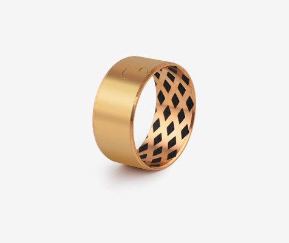

About Us
ZHEJIANG SF OILLESS BEARING is a listed company on the Growth Enterprise Market, a national high-tech enterprise specializing in the production of sliding bearing series products and a leading enterprise of self-lubricating bearings in Czech Republic.
"Bearing ZOB, no oil is lubricated!" After many years of research and development, production and sales, the company has accumulated a lot of valuable experience. The ZOB trademark has been recognized by the State Intellectual Property Office as a well-known trademark on bearing products. Oil-lubricated bearings, water-lubricated bearings, embedded solid-lubricated bearings, boundary-lubricated bearings, oil-lubricated bearings, grease-lubricated bearings and other full series of sliding bearings. Products are widely used in automobiles (passenger cars, commercial vehicles, new energy vehicles), construction machinery, construction machinery, agricultural machinery, fluid transmission, wind power generation, photovoltaic power generation, iron and steel metallurgy, industrial automation, food machinery, office equipment and other industries. More than 45% of the products are exported to more than 40 countries and regions such as Germany, Italy, Japan, the United States, Canada, South Korea, Taiwan, etc., creating a good international reputation.
Shuangfei pays attention to corporate culture, and has established the corporate policy of "innovation and excellence, harmony and win-win, stronger and bigger, and benefit one party". It is the secretariat unit of the Self-lubricating Bearing Sub-Technical Committee of the National Sliding Bearing Standardization Technical Committee. The company has an academician workstation, a sliding bearing research institute, and a Zhejiang technology center. It has established a technical research and development team that is loyal to the company. Every year, a number of new product projects pass the provincial new product appraisal. The company has passed ISO9001:2015, IATF16949:2016 quality System certification, ISO14001:2015 environmental system certification, GB/T29490-2013 intellectual property management system certification and other 7 major system certifications.
Sixteen-character policy
Innovation and excellence, harmony and win-win, stronger and bigger, benefit one party.
Innovation and excellence
It is the vitality of an enterprise. Without innovation, an enterprise cannot develop sustainably.
Harmony and win-win
It is the core of Shuangfei's corporate culture. Only with harmony can the company be stable and only win-win can make Shuangfei's customers all over the world.
Become stronger and bigger
It is the foundation of the enterprise and the economic backing. Without a strong economic foundation, everything will become empty words.
Benefit one party
It is the ultimate goal of enterprise construction. Hello everyone is really good. If our enterprise cannot benefit the society, it will lose the meaning of survival. If we want to unite the top and bottom of the company, we must have a concept, a theory, and a team. This idea is more of a spiritual force, which will guide us to grow and benefit more people.
Target Vision
Build a century-old enterprise and a 10-billion enterprise
Historical Mission
Make the quality and technical level of Czech Republic sliding bearings catch up with or surpass the level of similar international products.
Services
Our products have several application fields
Car Truck
Such as: special shaft sleeve for tensioner, special shaft sleeve for shock absorber, shock absorber guide assembly and piston, gearbox shaft sleeve and gasket, seat adjustment system shaft sleeve, door hinge and trunk hinge shaft sleeve, Wiper bushing, air conditioning compressor bushing, starter motor bushing, power steering pump bushing, steering system bushing, brake system and pedal assembly bushing, etc.
Construction Machinery
JF-MP friction welding bushings are used in rollers, supporting sprockets and guide wheels; bimetal and SF series bushings are used in booms, connecting rods, outriggers and other parts of pump trucks; JDB series solid inlaid lubrication series shafts It is applied to the boom, stick, amplitude modulation mechanism, oil cylinder and other parts.
Hydraulic System
The products provided are: aluminum seat assembly, bushing, side plate for gear pump; oil distribution plate, return plate, bushing for vane pump and plunger pump; bushing for oil cylinder, etc.
Mold industry
We provide all kinds of self-lubricating sliders, guide bushes, wedges and other products for automobile tire molds, injection molds, and stamping molds.
Injection / Die Casting
Shuangfei has been committed to the research and development of new products and the improvement of material performance. The improved JDB series solid inlaid self-lubricating bushings have the characteristics of high strength, wear resistance and maintenance-free. machine manufacturer.
Agricultural Machines
ZOB brand boundary lubricating bearings and grease lubricating bearings have good foreign body embedding due to their own structural characteristics, and can be used in occasions with a lot of dust and difficult maintenance.
Automated Industry
In the case of linear motion, ZOB brand self-lubricating bearings have the characteristics of low noise and self-lubrication, and are widely used in cylinders and automatic guide rails.
Clean Energy
ZOB brand self-lubricating and pre-lubricating bearings are suitable for wind power generation and photovoltaic power generation installations, and are maintenance-free for life.
Aerospace
In the aerospace industry, every detail counts. This is because even small deficiencies can impact cost, passenger experience and safety. From productivity, uptime to passenger safety and comfort, our lightweight, maintenance-free plain bearings are used in landing gear, flight controls and engines, passenger seating and a variety of tailored bearing applications. Engineering plastic bearings, as well as metal polymer bearings, make them suitable for aircraft interior applications such as seats, hinges, latches and overhead bins.
Ferrous Metallurgy
Shuangfei Co., Ltd. cooperates with users to carry out technological innovation, and designs self-lubricating bearings suitable for high temperature and high load occasions, which greatly prolongs the service life of the bearing at the lifting lug of the ladle and reduces the maintenance frequency of users.
Our Products
Check our Products
SF series.
SF series bearings are the company's leading products, SF stands for three-layer composite, namely: steel plate layer, copper powder layer, plastic layer. The steel plate layer plays the role of assembly positioning and bearing pressure; the copper powder layer plays the role of connecting plastic and auxiliary friction reduction; the plastic layer plays the role of wear resistance and self-lubricating. Its advantages are that it can be self-lubricated even when there is no oil, low noise during operation, thin-walled design structure is small in size, and wear resistance can be maintained for a long time without wear. It is a new type of bearing that replaces needle roller bearings, oil-impregnated bearings and copper alloy bearings. The advantages of our company's SF series bearings are the use of high-end equipment in the production process, strong automated production capacity, small wall thickness tolerances, high precision, and advanced product formulation technology. , carry out a working condition simulation test. Product quality and research and development technology are at the international advanced and domestic leading level.

JF series
JF series bearings are the company's second largest product. JF stands for Metal Composite. The outside of the bearing is made of steel, and the inside of the bearing is made of copper alloy. It can replace copper sleeve, babbitt and roller bearings when used in the presence of oil. The advantages are: low cost, thin-walled design, small volume, good wear resistance, And according to the lubrication conditions provided by customers, various forms of oil grooves and oil holes are designed, and can be adapted to mass production. The advantages of our company's JF series bearings are the use of high-end equipment and precision molds in the production process, strong automated production capacity, independent research and development and production of materials, to meet the design requirements of customers under different working conditions, high product precision, and good quality consistency. The lead-free bimetal bearing developed by the company has been authorized by a number of national invention patents, and has excellent performance, which can replace the traditional lead-bronze bimetal bearing. Product quality and research and development technology are at the international advanced and domestic leading level.

JDB series
JDB series bearings are the company's third largest product. They are inlaid solid self-lubricating bearings with high-strength metal matrix inlaid with solid lubricants. It has obvious advantages when used under high load and oil-free conditions. It replaces rolling bearings and copper alloy bearings in high pressure, high temperature and high precision applications. The products are cost-effective, adaptable and wear-resistant. JDB products can be used in environments that cannot be met by general copper sleeves to solve special needs. The advantages of our company's JDB series bearings are the use of high-end equipment in the production process, the use of digital application technology, high product precision, small geometric tolerances, and solid lubrication performance has reached the international advanced level.

Other Series
Other series of bearings are self-lubricating bearings other than the three major products. Including two-layer adhesive, three-layer adhesive, sintered inlay, pressing and sintering, surface spraying and other technical bearings. In order to meet the special working conditions of customers, it is a supplementary product of the three major bearings and a new product suitable for the development of emerging fields. Our company has strong new product research and development advantages, sufficient technical talents, complete digital technology applications, and strong development capabilities, which can provide customers with bearing application solutions. Through multi-disciplinary research and trial production of tribological principles, solid lubrication technology, polymer materials, metallography, etc., we have continuously developed products that meet various harsh working conditions, such as extremely high temperature, extremely low temperature, high speed, heavy load, aerospace, A new variety of sliding bearings that can still work stably for a long time under environmental conditions such as military industry, wind power, new energy, nuclear radiation, deep sea, and field maintenance-free.

Contact
Kindly reach out to us
Location:
Holečkova, 150 00 Praha 5-Smíchov, Czechia
Email:
info@zsobearing.com